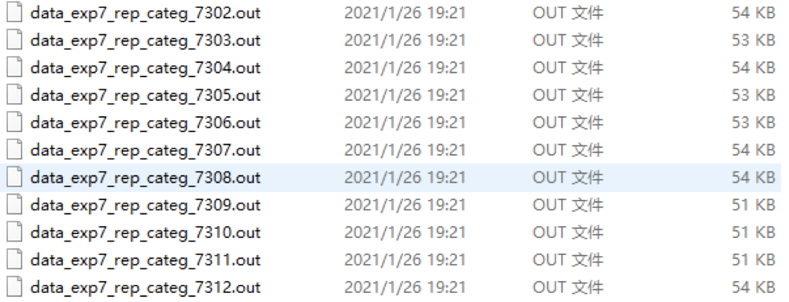
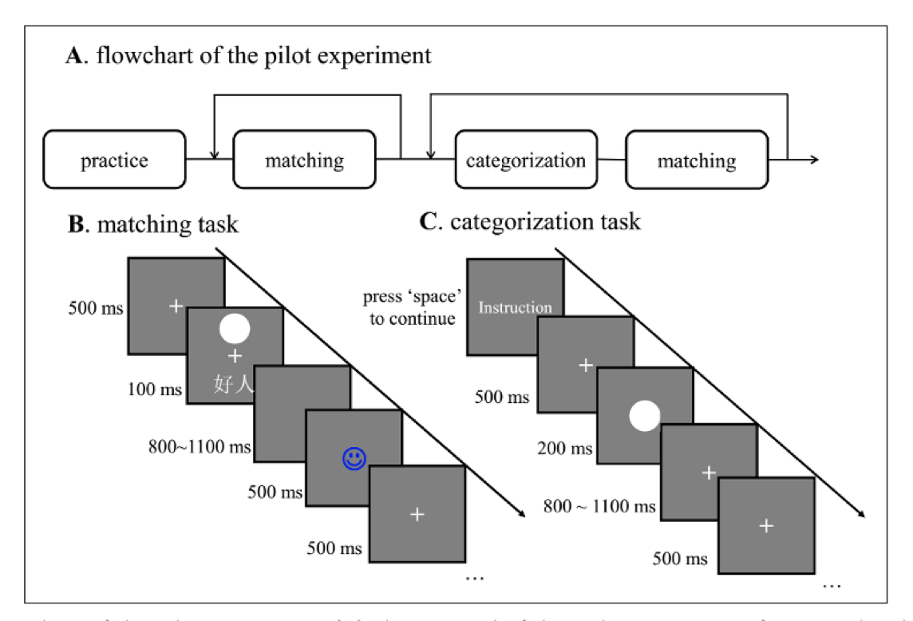
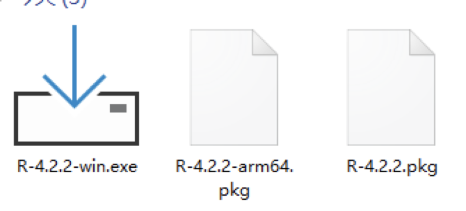
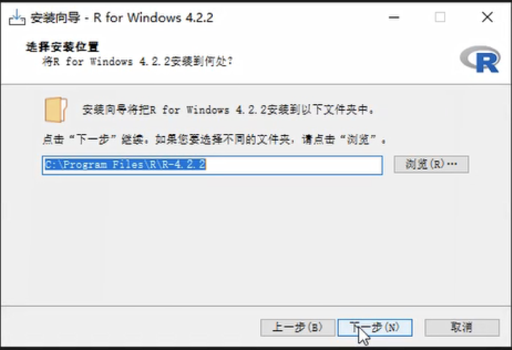
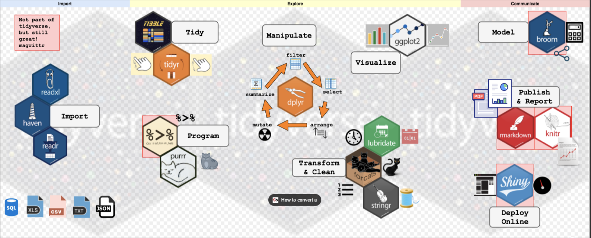
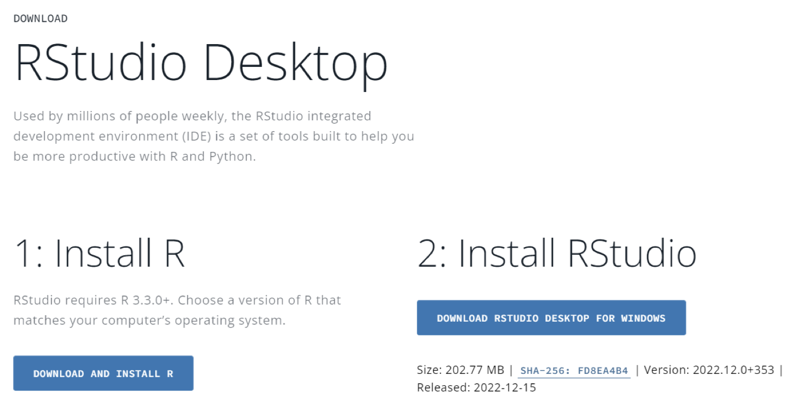
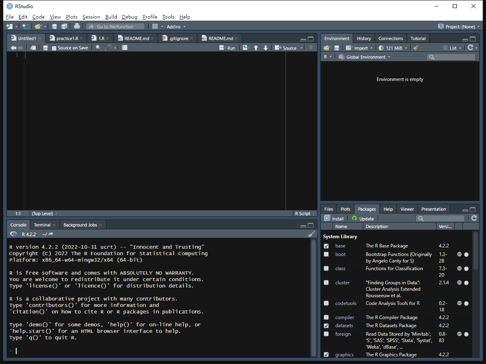
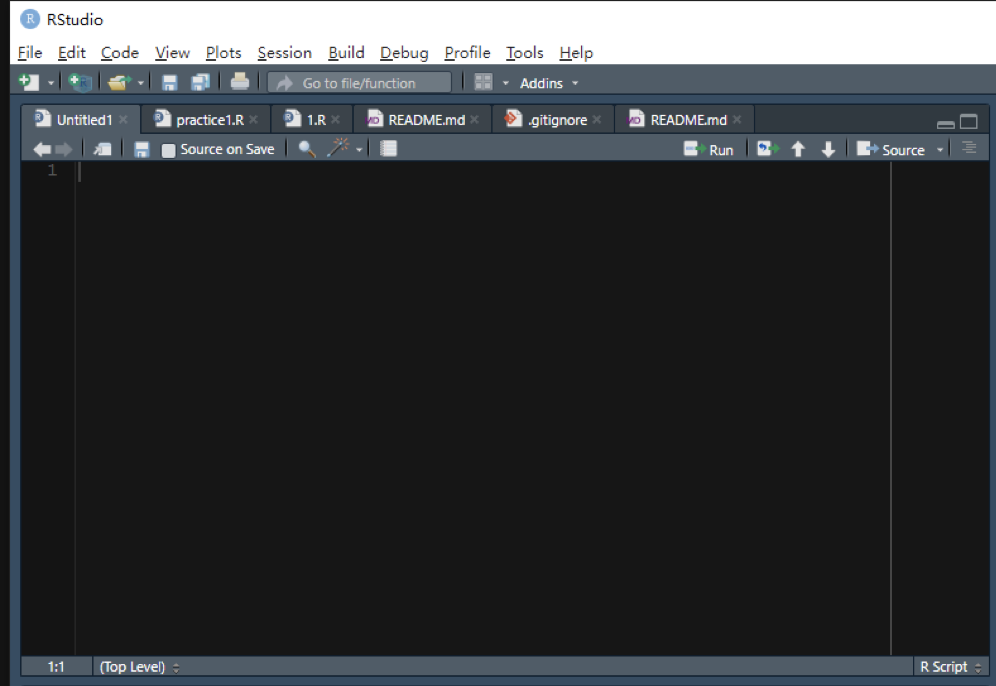
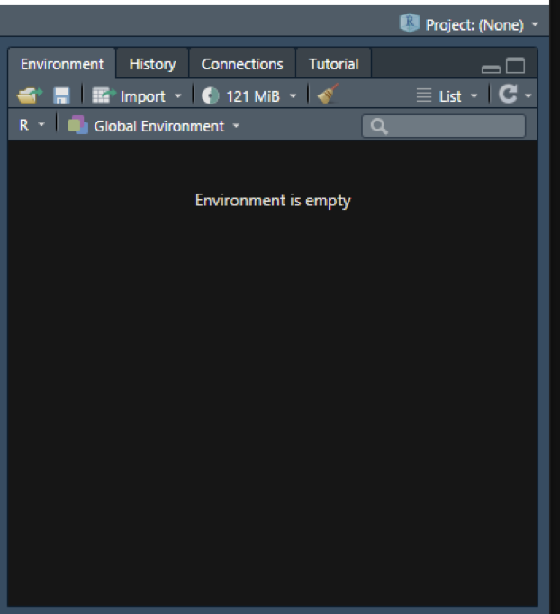
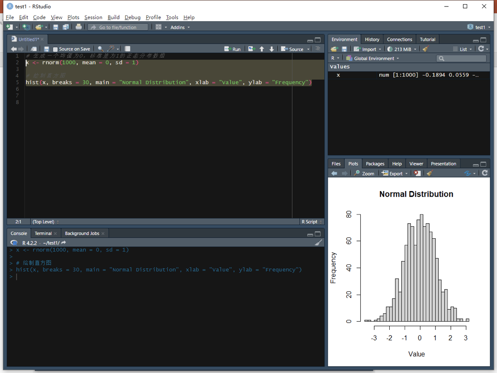

3 第二讲：如何开始使用R
前言
数据分析的出发点是解决问题，即需要有一个问题来指导数据分析的过程。对于社会科技或心理学背景的同学来说，面对像工科、计算机或统计等领域的同学时，可能会感到技术不够强，但是随着经验的积累，他们会发现技术必须要为问题服务。因此，关键在于了解要解决的问题，拥有问题的意识和思维，这对从事研究工作的同学来说尤为重要。提出一个好的问题需要不断思考和与导师讨论。最终，学习R语言或其他语言，或做一系列数据分析工作的目的都是为了回答一个特定的问题。问题的重要性本身决定了数据分析的价值。
除了研究问题以外，实践问题也是数据分析的重要应用。例如，解决实际的问题，如交通分流，设计道路等，以及辅助决策，特别是在疫情期间，行为科学在公共决策中的作用受到了重视。通过大量的行为研究数据，可以帮助政府或决策者做出决策，这也是在公司中的应用。因此，数据分析的出发点是解决问题，这是最重要的，也是学习数据分析和学习各种工具的目的。因此，要让数据分析工作可重复和更好地帮助解决问题，不能忽略这个最根本的出发点。
3.1 要解决的数据分析问题简介

3.1.1 第一个数据
为了帮助大家更好地学习如何用 R语言解决问题，我们提供了两个示例问题，这两个问题是我在之前参与过的项目中遇到的。这两个问题都对于心理学背景的同学都是比较熟悉的，其中一个是问卷调查的研究，是有关人类社会关系和体温调节的问题。在我读博士期间，我参与了我的合作者的这个研究项目，他现在在法国一所大学有自己的lab。他最关心的问题是人的体温和社会关系之间的关系。他提出了一个理论，认为人和哺乳动物有一个很苛刻的一个生存的环境，我们的核心温度必须要维持在某一个很窄的范围之内我们才能够生存，我们人类其实是比一些动物生存的环境是要求更苛刻的，比方说一些动物他会冬眠，这个外面的温度到了一定程度他就找个地方就躲起来冬眠，人类没有这个机制，所以人类一直要在一个恒温的条件下，或者相对恒温条件生存。那么在在哺乳动物里面发现哺乳动物会形成一个群，形成一定的社会关系，社会关系帮助大家调节这个体温，Hans当时感兴趣的一个问题就是：在人类社会上是不是实际上也存在这种机制？当人有一个比较好的一个社会网络之后，这个社会网络本身，他会帮助我们去调节我们的体温。有一些类似的有趣研究，比如握着热咖啡杯的人会让人觉得更加温暖和友好，孤独的人更喜欢洗热水澡等。这些研究都有一些扎实的数据支持，但并非所有的研究都有强有力的证据。Hans想验证社交关系是否能够调节体温这个问题，于是进行了一项大规模的跨国实验，收集了来自十几个国家的数据。他首先进行了一个piror study，然后收集了数据。我们会将这些数据分享给大家。这个数据集来自12个国家，包含了1,500多个人的信息，其中包括很多问卷，如怀旧程度、对家的依恋、主观压力感受、自我控制和新陈代和社交网络质量。这个数据集最初是从国外收集的，Qualtrics在线问卷被下载下来，和问卷星之类的网站下载的格式是类似的，现在以CSV和SAV格式提供。这个数据集可以被用于做数据分析。 在这门课程中，我们会假设自己是Hans课题组的同学，获取了数据后，我们将学习如何进行后续的数据分析。这个过程从数据导入开始，一步一步进行。我们最终可能想要解决的问题是如何预测核心体温，其中一个重要的分析方法是有监督的机器学习，我们将使用一个常规的算法，条件随机森林conditional random forest。我们将寻找能够预测核心体温的变量。在图中，红色线以上的变量对预测核心体温有很强的相关性，红色线以下的变量预测效果较弱。虽然我们测量了很多变量，但通过这个机器学习算法，我们发现只有部分变量与核心体温有比较强的相关，我们可以在这个基础之上进行进一步的挖掘。里面能够预测核心体温的有一个complex social integration指标，是社交网络的一个一个指标，我们后面会完全复现他的这个过程，最后希望感兴趣的同学，可以在这地方得到这个指标。也有一些传统的做问卷分析的一些结果。比方说这个调节作用：他发现是否处于亲密关系其实是对这个关系是有调节作用的。对于进行整套分析的研究，首先需要将原始数据输入到R语言中，然后进行数据清理和描述性统计，例如数据质量、问卷信度、均值、标准差等统计指标。此外，也可以进行探索性的数据分析，例如相关矩阵和running force等方法，来探索变量之间的关系。最后，我们需要呈现研究结果，包括condition to Reinforce的结果和mediation的结果，并将其整合到可视化报告中。这部分内容实际上原研究没有进行过。作者当时使用R语言编写了代码后，直接采用了传统的方式来准备手稿。在本节课中，我们可以使用Rmarkdown来完成整个数据分析，并生成PDF文稿。当时，由于很多工具还不够成熟，因此我们有机会做得更好。我们这里的这个数据分享流程可能只是一个大致的流程，里面可能还会有一些小的细节，例如如何去假定变量之间的关系，当然我们进行的是别人研究的复现，通过复现去了解R语言数据分析中的流程，提高自己的技术。
3.1.3
这个实验是一项简单的认知实验。在认知心理学中，我们通常会在实验室中进行背景教导，然后进行一些简单的按键反应。这个任务可以分为几个阶段。首先是练习和学习阶段。在这个阶段，我们会呈现几何图形（正方形、三角形和圆形）和三个人物标签（好人、普通人和坏人)，然后让你建立联系，例如将三角形和好人联系起来。接着，你需要判断屏幕上呈现的图形和人物标签是否匹配。这是一个非常简单的任务，只需要看一眼就能够记住图形和标签之间的关系。练习二三十次之后，你就能够熟练地完成这个任务了。
接下来，我们会进行一系列的任务，包括匹配任务和分类任务。匹配任务需要做出一个决策，即图形和标签是否匹配。它的反应时间非常短，大约在800到1100毫秒之间。分类任务需要判断图形是好人还是坏人，然后按相应的键。这个任务也需要在非常快速的时间内进行反应。
我们的实验目的是一个二乘二的实验，包括人物标签（自我和他人）和笑架（反派）。我们只有两个条件，非常简单。在分类任务中，我们可以采用两种标准：自我和他人，好和坏。在学习过程中，我们需要将它们组合起来，形成四个人物标签和四个集合图形。在BASE学习中，我们学习四个人物标签和四个集合图形之间的配对关系，完成匹配任务和分类任务。分类任务包括按身份和家族进行分类。这是一个相对简单的实验任务。

在研究中，我们想要了解简单的即时集合图形是否会影响知觉上的反应。我们发现，给集合图形打上标签后，会影响反应时间。虽然总体上来说，好的自我反应最快，好的他人的反应也不错，但是坏的自我和他人都比较慢。这是一个总体的趋势，但并不是每个集合图形都是这样的。我们使用这种方式来绘制图形，既能看到总体水平上的结果，也能看到个体差异。这样，在推断时就不会过度推断。
右边的图是d prime，是信号检测论中的一个指标。信号检测论是心理学背景课程中的一个重点，也是考研的重点之一。在心理物理学中，信号检测论是一种常用的数据分析方法，用于认知心理学研究。它可以计算d prime，即敏感性，这比准确率更能判断信号是否敏感。我们将匹配条件视为信号，不匹配条件视为噪音，以此来计算信号检测论。对于非匹配任务，如分裂任务，我们也可以计算类似的标准和数据。我们使用了一个名为Drift Fusion Model的简单计算模型来分析数据，它是用Python工具包制作的，但也可以在R中使用。导入数据可能有些复杂，因为每个Base的数据都有三个文件，需要合并和清理数据。在数据分析部分，我们需要使用Aloha计算T-test，并进行数据清理和可视化。我们还将使用另一个演示数据作为R语言的基础，来进行后续讲解。如果使用传统的方式，我们需要使用Excel处理数据，使用SPSS进行统计分析，使用Excel或PS进行图形绘制和美化，最后使用Word文档进行写作。PS是认知做视觉的人必备的工具之一。如果使用R语言，我们可以在R语言中完成所有工作，从Tinyverse开始进行数据清洗和工具分析，使用GGPlot2进行图形绘制。我们将使用Markdown或Papilla工具来输出荣告的话。在Brusa中，我们特别关注T-test方向分析和多重比较等内容。由于Brusa对心理学数据分析进行了特殊优化，因此非常方便。正如我们之前提到的，它可以保留所有分析过程，并且可以通过代码直接重复分析。分析的代码和方法也非常灵活，新的方法也容易共享。
3.2 如何安装
首先是安装过程，可以在百度或必应中搜索R语言官方网站，然后在该网站中下载安装程序，该程序适用于不同的操作系统和版本。对于Windows系统而言，安装过程比较简单，但对于Mac系统，安装过程可能会稍微复杂一些。Mac系统可能会有两个版本，分别为ARM64和PKG版本。ARM64版本是一种新型的芯片架构，适用于苹果芯片的电脑，你可能需要下载对应的包。


使用中文语言安装R语言会更加方便，可以避免编码问题。下载完成后，运行安装程序。在安装过程中，你可以选择是否自定义一些安装选项，但是默认选项通常已经足够了。为避免出现问题，请确保选择英文路径作为安装目录。完成安装之后，你可以开始实际学习操作。在此我也想提醒大家不要把安装目录放在中文文件夹里，因为我们使用的是来自国外开发者的国外软件，基本上是以英文为主的，如果使用中文可能会出现编码问题。

在上方你可以看到，此处默认选择了中文作为系统显示语言，大概是系统语言设置为中文后自动采用了中文显示。请问各位组员，现在都可以正常地看到这个界面了吗？刚刚我检查了一下，大部分的人都没有遇到任何问题，但是有一位同学看到了一些警告，猜测是语言设置引起的。对于那位出现警告的同学，可以将软件的信息全部切换到英文。
针对另一个问题，我认为以后可能会遇到同样的情况。就是，你可能会看到一些红色警告的字体。在R语言中也会遇到这种情况。这里有两种类型的警告：一种是称为”警告（warnings）“，另一种是”错误（errors）“。对于那些被警告的代码，我们需要仔细检查，看看是否会对我们的运行造成严重的影响。如果没有明显的影响，那么就可以忽略。
然后，我们可能会遇到一些问题，例如，遇到一些非UTF-8编码的语言编码。这意味着我们不是使用Unicode编码方式。为了解决这些问题，我们通常使用UTF-8编码方式，这是中文中非常常见的编码方式。在大部分计算机系统中，我们都可以使用UTF-8编码方式，因为它是国际上通用的编码方式。
3.3 如何方便使用？Rstudio的安装与界面介绍
大家都已经成功安装了 R 语言，现在看到的是console控制台界面。早期的R语言使用这个控制台进行输入和操作。比如，我们可以输入一个简单的命令，例如：a <- rnorm(100)，，在变量a中存放了一个分布。控制台支持用户输入任何语句，比如demo()，plot(x,y)。（这将自动打开一个窗口显示绘制的图形。）

对于没有编程经验的同学来说，这个可能是一个不太熟悉的点。为什么我们在这里输入这个东西呢？为什么会跳出这个东西呢？有时候会出错吗？例如，我们输入a会得到一个数字，但是如果输入b，他会告诉你没有这个对象，同样地，如果输入c，也不会有任何效果。这里的一个难点是，为什么有些输入会被计算机执行，但是有些不会？还有就是，为什么有些输入会产生图形效果，有些则不会？这实际上是我们和计算机交互的一种方式，这与过去使spss软件的方式有所不同。在使用spss软件时，我们通过点击屏幕来进行交互，并从菜单中选择选项。这被称GUI，即图形用户界面。然而，当我们使用R语言或其他语言时，我们主要使用的不是这种图形界面。我们只有一个输入代码的窗口，通过在这里输入代码与计算机交互。这是我们最常用、最需要的程序。对于其他语言也是一样。很少有人真正使用这种代码式的交互，因为它不太方便。

这样的交互方式的缺点是，我们不知道哪些变量保留在内存中。当我们进行一系列操作时，我们不知道哪些操作是我们刚才输入的。它们存在于计算机的缓存之中。如果我们输入了许多变量，如a、b、c、d等，我们无法回忆起这些变量的细节。因此，当我们学习R语言时，我们希望有一个更好的地方来编写代码。我们不希望一次只写一行代码，然后再运行。因此，我们需要一个更友好的代码编辑器，而不仅仅是控制台。虽然控制台是与R进行交互的窗口，但有时不够友好。 ### Rstudio的安装与界面介绍 {#2-Rstudio-install}
幸运的是，我们可以使用R Studio来完成这项任务。所以我们需要安装好R之后，再安装R Studio。有两个版本可以选择：Windows版和Mac版。安装时，我们需要将其安装在非中文目录下。安装后，我们可以选择64位系统。使用R Studio的最大好处是我们可以一次编写一长串代码，然后执行它们。

打开RStudio后，显示出的是一个白色背景的界面，我们可以通过更改外观中的主题来改变界面颜色。在这个地方，工具中有一个全局选项，外观，你可以把它改成更专业的样式。现在界面变得专业很多了，这是我们通过调节一些参数实现的。当然，也可以根据自己的喜好来调整。另外，将界面背景改成灰色可以省些电，因为不用一直发亮光。
接下来讲讲界面的调整。我们的界面是由四个面板组成的，但是在刚安装RStuidio时，我们看到的是三个面板的界面，界面可能还有点不一样。我们可以新建一个project来呈现一个新的面板。

现在我们有4个窗口。这4个窗口分别是脚本编辑区、控制台、环境和文件。
脚本编辑区
脚本编辑区可以记录下我们想要写的代码，并且可以选择性地运行。我们也可以直接创建一个R脚本，然后输入代码。在输入代码的时候，RStudio会提示我们，根据我们之前输入的字符来预测我们可能想要输入的代码。这样的话，我们就不用记住很多代码，可以更方便地完成代码。我们可以将所有的代码放到一起，形成一个脚本文件，一般以R结尾。我们可以用RStudio打开它，这样可以更好地编写R代码。

右上角这个地方，它实际上它不是一个窗口，而是多个窗口，第一个选项卡，这是一个被称作environment的窗口，类似于人的工作记忆一样，会存储我们运行中的所有的数据和变量。现在这块区域是空白的，因为我们没有进行过任何的数据的操作和读取。如果我们运行了一些有关变量的R指令，涉及到的变量就会在这块区域中出现。

第二个窗口是history,我们所有运行过的代码会在这里被列出，就像我们刚才输入的指令，都会保存在里面。
控制台

控制台界面
Console，即控制台，展示了所有程序的交互结果。代码的运行结果与报错都会在该窗口展示。在Rstudio中不仅有Console控制台，还有一个teminal，这是一个与windows系统进行交互的界面。在Mac os中也有相同的Termianl终端。我们可以让它进行在后台安装软件之类的工作，不过我们使用的不多。
在后面我们使用github的时候，我们可能会较多的涉及到Teminal相关的内容。
右下角窗口集

右下角有许多子窗口，我们一般会频繁地用到其中的两三个，一个是files，一个是plot，可能还有一个help。
当我们对某个指令的具体功能和提供的参数不是很了解的时候，我们可以在help中进行输入和搜索，它就会提供给我们一些相应的解释和说明，我们可以详细的了解相关的函数和包。
file窗口是我们的文件浏览器，我们可以看到我们打开的文件夹里有什么文件。并且可以进行打开。因为我们打开的是一个R project文件，它会自动将工作目录关联起来。
plot界面是我们画出来的图的展示的地方，我们使用plot等指令绘制的图表将会在这个界面中呈现。我们可以通过手动拖拽窗口的大小来调整输出图片的大小，并且可以进行保存等操作。

除此之外，我们还有packges选项卡，在其中我们能看到我们安装的包，并且对其进行管理。
3.3.1 测试Rstudio
现在，我们可以对我们的安装过程进行一个检查，如果我们能够在Rstudio中正常的输出这样的图表的话，就说明我们的安装基本上没有问题了。
image-20230309144756488
典型问题
由于大家的输入都是以中文为主，我们是中文用户，所以输入法很多时候会保持在一个中文输入的状态，但是这个时候你的标点符号也会是中文的，但是所有R的指令需要的都是英文的标点符号，如果你输错了，可能就会产生问题。比如产生unexpected input这样的报错